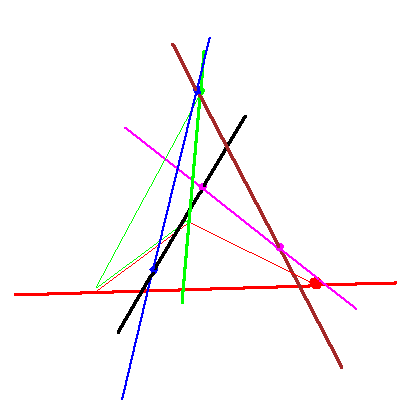

The problem of four lines in P3


The problem of four lines in P3 |
|
|  |
In the first stage of the specialization sequence, the plane rotates about the line until it contains the fixed point, nothing happens to the solution lines (blue and magenta). Two black checkers change places, but the red checkers stay. This is the case of (no,no) in Table 2/Figure 8 of A Geometric Littlewood Richardson Rule, hereafter called GLR. |

|